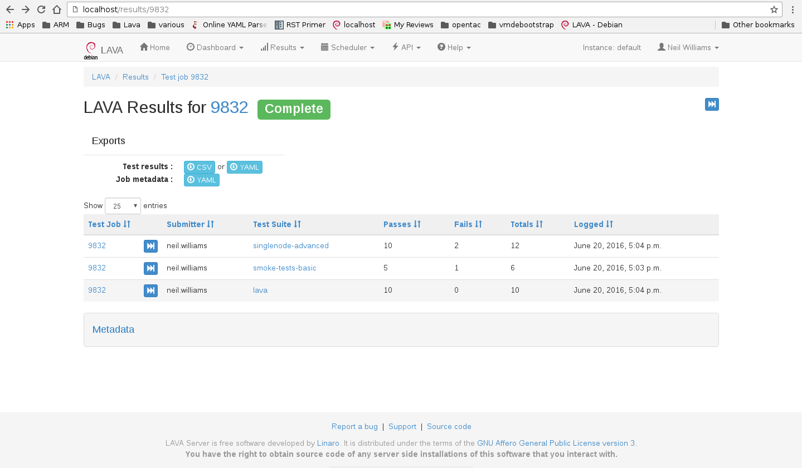

LAVA
2021.01
LAVA
2021.01
A job defines what software should be deployed on the device under test
(DUT) and what actions should be performed there. Jobs are defined in YAML
files.
Here’s an example minimal job that you should be able to use right away if you have user access to an appropriately-configured LAVA installation.
# Your first LAVA JOB definition for an x86_64 QEMU
device_type: qemu
job_name: QEMU pipeline, first job
timeouts:
job:
minutes: 15
action:
minutes: 5
connection:
minutes: 2
priority: medium
visibility: public
# context allows specific values to be overridden or included
context:
# tell the qemu template which architecture is being tested
# the template uses that to ensure that qemu-system-x86_64 is executed.
arch: amd64
metadata:
# please change these fields when modifying this job for your own tests.
docs-source: first-job
docs-filename: qemu-pipeline-first-job.yaml
# ACTION_BLOCK
actions:
# DEPLOY_BLOCK
- deploy:
timeout:
minutes: 5
to: tmpfs
images:
rootfs:
image_arg: -drive format=raw,file={rootfs}
url: https://images.validation.linaro.org/kvm/standard/stretch-2.img.gz
compression: gz
# BOOT_BLOCK
- boot:
timeout:
minutes: 2
method: qemu
media: tmpfs
prompts: ["root@debian:"]
auto_login:
login_prompt: "login:"
username: root
# TEST_BLOCK
- test:
timeout:
minutes: 5
definitions:
- repository: http://git.linaro.org/lava-team/lava-functional-tests.git
from: git
path: lava-test-shell/smoke-tests-basic.yaml
name: smoke-tests
- repository: https://git.linaro.org/lava-team/lava-functional-tests.git
from: git
path: lava-test-shell/single-node/singlenode03.yaml
name: singlenode-advanced
See also
Jobs may be submitted to LAVA in one of three ways:
Once you have copied the above job definition to a file, (for example
/tmp/job.yaml), use lavacli to submit it as a test job in Linaro’s main
LAVA lab:
$ lavacli --uri https://<username>:<token>@validation.linaro.org/RPC2/ jobs submit /tmp/job.yaml
1303132
Note
Replace username with your username and <token> with your private token.
Once the job is submitted successfully, the job id is returned; this may be
used in order to check the status of the job via the web UI. In the above
submission the job id returned is 1303132. Go to
https://validation.linaro.org/scheduler/job/<job-id> in order to see the
details of the job run: the test device chosen, the test results, etc.
You can also use lavacli directly to see the logs:
$ lavacli --uri https://<username>:<token>@validation.linaro.org/RPC2/ jobs logs 1303132
It may take some time before the job actually starts, depending on the number of jobs waiting in the queue for a device of this type. Once the job starts, the status information will automatically update and the logs will appear.
Results are populated live and will start to appear during the operation of the deploy action. The plain log can be downloaded and the definition is available for later reference. If you are the submitter of the job, you can also choose to cancel the job.
In order to run a test, a test definition is required. A test definition is expressed in YAML format. A minimal test definition would look something like the following:
metadata:
name: passfail
format: "Lava-Test-Shell Test Definition 1.0"
description: "Pass/Fail test."
version: 1.0
run:
steps:
- "lava-test-case passtest --result pass"
- "lava-test-case failtest --result pass"
The first job mentioned above uses a more complex test definition:
The metadata in a test definition is for the maintenance of that test definition and covers details like the maintainer, the kinds of devices which may find this test definition useful and the scope of the test definition. (Scope is arbitrary, often a scope of functional is used to describe a test which is useful to test that the image is functioning correctly.) The run steps of this definition are:
run:
steps:
- lava-test-case linux-linaro-ubuntu-pwd --shell pwd
- lava-test-case linux-linaro-ubuntu-uname --shell uname -a
- lava-test-case linux-linaro-ubuntu-vmstat --shell vmstat
- lava-test-case linux-linaro-ubuntu-ifconfig --shell ifconfig -a
- lava-test-case linux-linaro-ubuntu-lscpu --shell lscpu
- lava-test-case linux-linaro-ubuntu-lsb_release --shell lsb_release -a
This simple test executes a series of commands in the booted image. The exit value of each command is used to determine whether the test case passed or failed. You can try any of these commands on a Ubuntu or Debian system to see what the commands should create as output.
See also
Writing Tests, Writing a Lava-Test Test Definition 1.0 and Metadata
On the job view page, there is a button to access the Results. Results can also be accessed from the Results Overview in the menu. The results for the first job example could look like:
The results include the test definitions submitted within the job as well as a
reserved lava set of results generated during the operation of the test job
itself. There is also metadata which is generated by the test job, including
details like the URL of the test definitions used and the type of deploy and
boot methods involved in the test job.
LAVA makes the test results available directly from the instance,
without needing to go through lavacli. The results for any test
job which the user can view can be downloaded in CSV or YAML format.
For example, the results for test job number 123 are available in CSV
format using: https://validation.linaro.org/results/123/csv. The
same results for job number 123 are available in YAML format using:
https://validation.linaro.org/results/123/yaml
If you know the test definition name, you can also download the
results for that specific test definition only in a similar way:
https://validation.linaro.org/results/123/0_singlenode-advanced/csv
for the data in CSV format and
https://validation.linaro.org/results/123/0_singlenode-advanced/yaml
for the YAML format.
See also
Remember to check the YAML syntax of your test job files using the Online YAML parser before submission.
See also
The Scheduler menu contains a Submit Job action which can be used to submit
jobs to any instance using your browser. You need to be logged in and have
permission to submit jobs to that instance. The web submission form for a
localhost installation would be http://localhost/scheduler/jobsubmit.
To submit jobs to the Linaro lab in Cambridge, visit
https://validation.linaro.org/scheduler/jobsubmit. Paste your YAML file
into the window and click the “Submit” button. An example job submission screen
is shown below,
Note
If a link to a test job YAML file is pasted on the above screen, the YAML file will be fetched and displayed in the text box for submission. Make sure that the link is to the raw content of the YAML file, not HTML.
Once the job is successfully submitted, the job details are displayed. (If a list of jobs was created, the first job in the list will be displayed.)
lavacli is a wrapper around the XML-RPC API with helpers for personal usage. The XML-RPC API itself supports a variety of queries and operations which can assist in creating a frontend to LAVA which can automate the submission of test jobs.
Many languages have XML-RPC support, the API help page on each LAVA instance
provides a python example script, with and without using tokens. Job submission
requires using an authentication token and
should use https wherever possible to protect the token.
See also
For help using the XML-RPC API to submit jobs, see the sections on
lavacli and the Available methods link from the API menu of the
LAVA instance. For example: http://localhost/api/help.